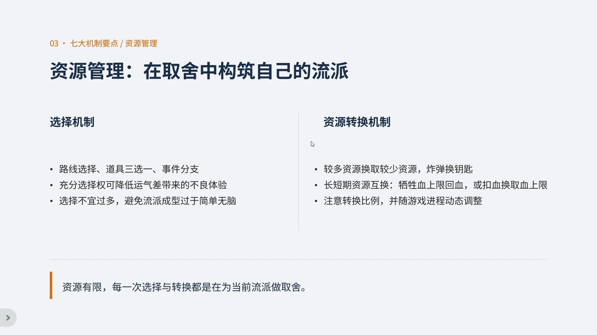

资源管理：在取舍中构筑流派
资源有限只是前提，真正让玩家动脑的是选择机制。钱只有这么多，路线只能走一条，卡牌只能拿三张里的一张——每一次选择都要放弃别的可能性，这才叫取舍。
这一章有一个贯穿始终的判断标准，来自视频里讲者的一段话，值得放在最前面：好肉鸽和不好玩的肉鸽，一个重要区别是玩家能不能通过自己的操作，规避掉运气差带来的不良体验。选择机制就是那个“操作空间”的载体。
8.1 选择机制的三件套
| 机制 | 形态 | 玩家在算什么 | 典型案例 |
|---|---|---|---|
| 路线选择 | 地图上的分支节点，每条路的风险与收益不同 | 血还够不够、牌要不要敲、这层敢不敢走精英 | 《杀戮尖塔》的节点图 |
| 多选一 | 三选一、四选一，从有限候选里挑一个 | 这件和我的构筑有没有协同、要不要为它改变方向 | 卡牌奖励、道具房 |
| 分支升级 | 同一件东西往不同方向强化 | 短期收益还是长期成型 | 武器改造、技能树、卡牌升级路线 |
《杀戮尖塔》是这三件套配合得最好的样本。它的地图节点让你选“血量还是卡牌、商店还是篝火”，它的卡牌奖励是三选一，它的休息点让你在“回血”和“升级一张牌”之间二选一。三个机制各自独立，但都在逼玩家回答同一个问题：我现在最缺什么。

8.2 选择给多了会怎样
这是视频里一个很尖锐的反例：如果卡牌奖励不是三选一，而是十选一，玩家会在第一层就把想要的牌全部抓满，直接凑出一套无敌组合。他举的例子是“把猛虎下山、发泄这类核心牌一层就抓齐”，然后后面全程碾压。
选择的本质是制造约束。给的选择越多，运气对结果的影响越小，但策略空间也被压缩——因为玩家总能拿到最优的那张，不需要为“没拿到”设计替代方案。
| 选择数量 | 运气权重 | 策略权重 | 结果 |
|---|---|---|---|
| 2 选 1 | 低 | 低 | 经常两个都不想要，玩家感觉被喂 |
| 3 选 1 | 中 | 中 | 平衡点，多数肉鸽的选择 |
| 5 选 1 以上 | 低 | 低 | 总能拿到最优，构筑失去稀缺感 |
| 1 选 1（无选择） | 极高 | 零 | 纯抽奖，玩家只能怪运气 |
这张表说明一个反直觉的结论：选择太多和选择太少，都会让运气权重上升。前者是因为玩家总能拿到最优解，过程变得无脑；后者是因为玩家完全没有干预能力。中间那段才是策略真正生效的区间。
8.3 资源转换：让“多的换少的”也成立
视频里把转换机制讲成了两类，这两类在心理上的作用完全不同。
用自己富余的资源，去换稀缺的资源。典型例子是《以撒》里用炸弹炸开隐藏房——炸弹对你来说是多余的（如果这局不走炸弹流），但隐藏房里的道具是稀缺的。
设计要点：让“富余”这件事是相对的。如果某样资源对所有人都不富余，这个转换就没有意义；如果所有人都富余，转换就变成免费福利。它应该取决于玩家的构筑方向。
用大量资源换少量高价值资源。典型是“用三件普通道具换一件稀有”的祭坛、或者用一堆金币换一次属性突破。
设计要点：兑换比必须让玩家肉疼。如果三换一太划算，玩家会无脑攒着换；如果太亏，没人用。经验值是：让玩家在拥有 6–8 件时开始犹豫。
牺牲长期强度换当下存活，或者牺牲当下换长期上限。《以撒》的“血上限换血”是典型：你现在的血量很低，但血上限是空的，可以卖掉一部分上限把当前血量顶上去——先活过这一层，后期再补。
反过来也成立：扣掉大量当前血量，换一点永久血上限。设计要点是两种方向都要存在，否则玩家永远只有一种最优解。
视频里对这类机制的解释很实在：“活下去才有后期，才能继续构筑”。这句话点明了长短期互换的心理基础——玩家不是在做数学题，而是在做风险管理。
8.4 汇率：转换比例必须动态
固定的兑换比例一定会崩。前期玩家缺金币，后期金币溢出，同一个价格在前期的“贵”和后期的“便宜”完全不是一回事。可用的做法有三种：
- 按层数上浮：越往后越贵，抵消收入增长。适合商店、祭坛这类固定设施。
- 按使用次数上浮：同一个操作做得越多越贵，典型是删牌涨价。适合“重复同一件事”的行为。
- 按存量浮动：你手上的资源越多，兑换越不划算。适合防止“攒一波资源一次性变现”。
一条实用的汇率原则
任何转换都应该让“已经重复做过的玩家”边际收益下降。
因为重复行为意味着这个策略稳定有效，而稳定有效的策略会挤压其他玩法。涨价不是为了惩罚，是为了让玩家在下一次转换前重新评估：我还有没有必要继续换？
8.5 让机会成本可见
选择机制做得再好，如果玩家看不到代价，也等于没做。三条最低要求：
代价要写在选项上
“牺牲 10 点血上限换 20 点当前血量”，把数字直接标出来，不要藏在描述里。
放弃的东西要能被感知
路线选择时，玩家应该能看到没走的那条路上有什么类型（精英、商店、未知），而不是一片空白。
决策要有回看
结算界面列出这局的关键选择，让玩家能复盘“如果我当时走了另一条路”。
8.6 实现：带约束的兑换系统
using System;
using System.Collections.Generic;
public enum ResourceKind { Gold, Hp, MaxHp, Bomb, Key, CardSlot }
public struct Cost { public ResourceKind Kind; public int Amount; }
public struct Gain { public ResourceKind Kind; public int Amount; }
public class ExchangeOffer
{
public string Id;
public Cost Cost;
public Gain Gain;
public int MaxUses = -1; // -1 表示不限
public int UsesPerFloor = 1;
}
public class ExchangeService
{
private readonly Dictionary<string, int> _uses = new();
private readonly Func<int> _currentFloor;
public ExchangeService(Func<int> currentFloor) { _currentFloor = currentFloor; }
/// <summary>按使用次数计算实际代价：每用一次，代价上浮</summary>
public int ActualCost(ExchangeOffer offer, float step = 0.15f, int cap = 3)
{
int used = _uses.TryGetValue(offer.Id, out var u) ? u : 0;
double mul = Math.Min(cap, 1.0 + used * step);
return (int)Math.Round(offer.Cost.Amount * mul);
}
/// <summary>能否兑换：资源够、次数够、且不允许“换回同一种”</summary>
public bool CanExchange(ExchangeOffer offer, PlayerResources res)
{
if (offer.Cost.Kind == offer.Gain.Kind) return false; // 防套利
if (offer.MaxUses >= 0 && GetUses(offer.Id) >= offer.MaxUses) return false;
return res.Get(offer.Cost.Kind) >= ActualCost(offer);
}
public void Exchange(ExchangeOffer offer, PlayerResources res)
{
if (!CanExchange(offer, res)) throw new InvalidOperationException("不可兑换");
int cost = ActualCost(offer);
res.Add(offer.Cost.Kind, -cost);
res.Add(offer.Gain.Kind, offer.Gain.Amount);
_uses[offer.Id] = GetUses(offer.Id) + 1;
}
private int GetUses(string id) => _uses.TryGetValue(id, out var v) ? v : 0;
}
8.7 三个坑
存在明显最优解
如果每次三选一里永远有一张明显更强，玩家就不用思考了。判断方法：统计三张卡的选取率，如果某一张超过 80%，说明它不是选择，是答案。
选择过多导致决策疲劳
每层给你 5 个事件、每个事件 4 个选项，玩家会在第三层开始凭直觉乱点。控制每次决策的选项数在 2–4 之间，事件总数也要随层数收敛。
转换变成免费洗点
如果资源转换没有成本（或成本极低），玩家会反复换着玩，构筑失去承诺感。任何一次转换都应该让玩家付出“不可逆”的一部分——时间、次数、或一点上限。
判断练习 8-1
统计你项目里所有三选一界面的选取率。找出选取率超过 70% 的选项，判断它是“设计得太强”还是“其他两个设计得太弱”。两种情况的改法完全不同。
实现练习 8-2
给 ExchangeService 加一个正收益环检测：把兑换关系建成有向图，检查是否存在“从 A 出发回到 A 且收益为正”的环，检测到就抛出警告并打印环路径。
判断练习 8-3
设计一组长短期互换：一个“卖上限换当前”的选项，和一个“扣当前换上限”的选项。写出它们的数字，然后回答：什么样的玩家会选前者，什么样的会选后者？如果只有一种玩家会选，说明平衡没做对。
本章小结
- 选择机制有路线、多选一、分支升级三种形态，共同制造机会成本。
- 三选一是平衡点：太少变抽奖，太多变无脑。
- 资源转换分多换少、少换多、长短期互换，三种方向的玩家心理不同。
- 汇率必须动态：按层数、按次数、按存量上调，防止重复策略一直有效。
- 没有可见的代价，就没有真正的选择；且必须防止兑换环套利。